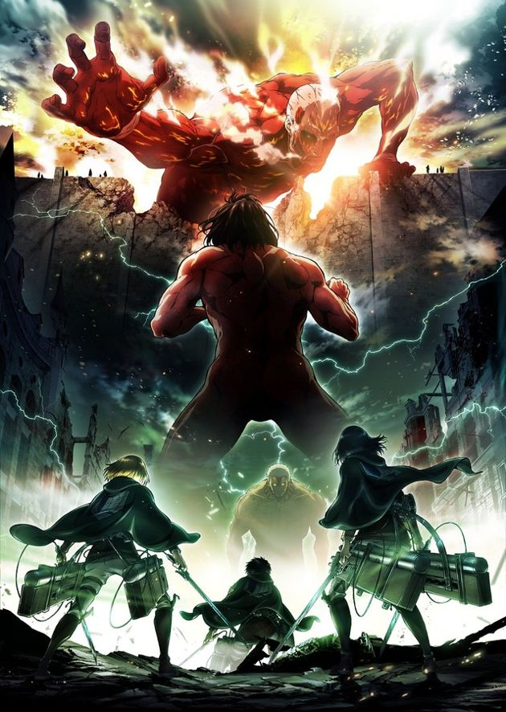

AnimeInterester
進擊的巨人 第二季

故事簡介
高牆被巨人破壞後，人類正一步步接近世界的真實。巨人真正的身分究竟為何？為什麼城牆之中埋藏著巨人？艾連化身成巨人後所擁有的「座標」是什麼樣的能力？希絲特莉亞又會知曉關於這個世界的什麼？艾連等人統整了全新體制的里維班，在發動作戰之際，現身在他們眼前、阻擋去路的是史上最強最難纏的敵人…
製作人員
原作：諫山創
總導演：荒木哲郎
導演：肥塚正史
劇本統籌：小林靖子
角色設計：浅野恭司
總作畫監督：浅野恭司 / 門脇聡 / 山田歩
副導演：田中洋之
動作作畫監督：今井有文 / 世良悠子 / 胡拓磨
美術設定：谷内優穂
巨人設定：千葉崇明
道具設計：胡拓磨
色彩設計：橋本賢
美術監督：吉原俊一郎
3DCG監督：廣住茂徳
3DCG製作人：籔田修平
攝影監督：山田和弘
剪輯：肥田文
音響監督：三間雅文
音樂：澤野弘之
音響效果：倉橋静男
音響製作：テクノサウンド
聲優名單
艾連·葉卡：梶裕貴
米卡莎·阿卡曼：石川由依
阿爾敏·亞魯雷特：井上麻里奈
約翰·基爾休坦：谷山紀章
亞妮·雷恩哈特：嶋村侑
莎夏·布勞斯：小林優
希絲特莉亞·雷斯/克里斯塔·連茲：三上枝織
柯尼·史普林格：下野紘
萊納·布朗：細谷佳正
貝爾托特·胡佛：橋詰知久
尤米爾：藤田咲
里維·阿卡曼：神谷浩史
艾爾文·史密斯：小野大輔
漢吉·佐耶：朴璐美
各集標題
| 話數 | 標題 |
|---|---|
| 1 | 獸之巨人 |
| 2 | 我回來了 |
| 3 | 往西南 |
| 4 | 士兵 |
| 5 | 希絲特莉亞 |
| 6 | 戰士 |
| 7 | 打‧投‧極 |
| 8 | 追擊者 |
| 9 | 開口 |
| 10 | 孩子們 |
| 11 | 突擊 |
| 12 | 怒吼 |